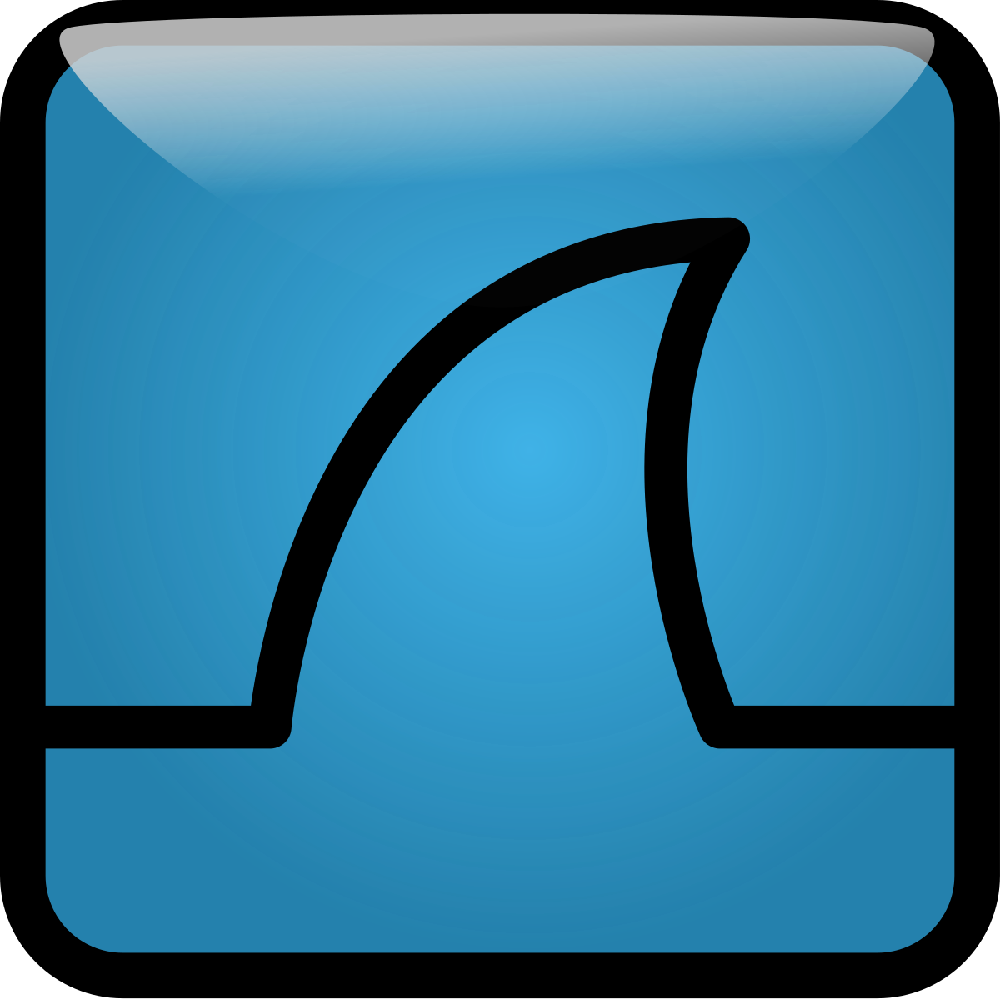
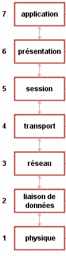

RootMe est une plateforme pour tester vos compétences en hacking.
Je l'ai découvert car on commençait à en parler autour de moi à l'IUT. Je me suis dis pourquoi pas je me lance.
J'ai taper dans youtube rootMe et je suis tombé sur cette vidéo
J'ai donc réaliser le challenge d'authentification twitter qui valait 15 points.
La solution se trouvait à: J'ai pas le droit de vous dire car on a pas le droit de le dire c'est dans la politique de RootMe.
Bravo! Voici 15 points
J'ai donc du utiliser un logiciel d'analyse de trames réseau et je suis tombé sur Wireshark
Wireshark,c'est quoi?

Au cours du challenge d'autentification twitter on devait ouvrir un fichier qui avait pour extension .pcap
Les fichiers .pcap sont des extensions de fichier qui peuvent être ouvrir notamment par Wireshark. C'est un programme utilisé pour l'analyse de réseaux.
Que contient t'il?
Il contient les données sous formes de paquets réseau. On a ainsi accès à tous les niveaux des couches d'un paquet réseau. On a ainsi les données et les résultats d'une analyse réseau.
Quel est son rôle?
On peut analyser les caractéristiques d'un réseau et controler le trafic d'un réseau
Comment on utilise wireshark pour l'analyse réseau?
On utilise des filtres pour obtenir ce qu'on veut!
Mais on commence à parler de réseau où là faut que j'approfondisse cela.
Il est temps d'aller sur Openclassrooms.
Oh mais que vois-je? Un MOOC sur les TCP/IP cool! je me lance!
Le modèle OSI
Son objectif est de normaliser les communications pour garantir un maximum d'évolutivité et d'interopérabilité entre les ordinateurs.
Qu'est-ce que le modèle OSI ?
Le modèle OSI est une norme qui préconise comment les ordinateurs devraient communiquer entre eux. Cela impliquera notamment le respect de la communication par couches.
Ces couches, c'est quoi ?
Disons que couche=morceau, qui ont chacuns un rôle définis

Cartes d'identité des couches du modèle OSI
Voir ce cours
La couche 1: La couche physique
- Nom : physique.
- Rôle : offrir un support de transmission pour la communication.
- Rôle secondaire : RAS.
- Matériel associé : le hub, ou concentrateur en français
- Description: Ce niveau définit les caractéristiques mécaniques, électriques et fonctionnelles pour établir, maintenir et libérer les connexions physiques.
- Elle assure la transmission et la réception de flots binaires.
- Elle assure la compatibilité des interfaces (codage, modulation, amplification du signal).
La couche 2 ou couche liaison :
- Nom : liaison de données.
- Rôle : connecter les machines entre elles sur un réseau local.
- Rôle secondaire :détecter les erreurs de transmission
- Matériel associé : le switch, ou commutateur.
- Description: Elle est responsable de l'acheminement sans erreur des blocs d'informations appelés trame.
- Elle assure l'accès au média pour le partage simultané de celui-ci par tous les éléments du réseau : c'est la méthode d'accès.
La couche 3 ou couche réseau :
- Nom : réseau.
- Rôle : interconnecter les réseaux entre eux.
- Rôle secondaire : fragmenter les paquets.
- Matériel associé : le routeur
- Description:Elle assure l'aiguillage des informations à travers un réseau en s'appuyant sur des tables de routage.
La couche 4 ou couche transport :
- Nom : transport.
- Rôle : gérer les connexions applicatives.
- Rôle secondaire : Garantir la connexion
- Matériel associé : RAS
- Description: Elle assure le contrôle de bout en bout (reconstitution du message initial) et applique différents degrés de qualité de service.
La couche 5 ou couche session :
- Nom : session
- Rôle :
- Rôle secondaire :
- Matériel associé :
- Description: Elle est chargée de l'organisation et de la synchronisation du dialogue entre les processus d'applications.
La couche 6 ou couche présentataion:
- Nom : présentation
- Rôle :
- Rôle secondaire :
- Matériel associé :
- Description: Ce niveau structure les données dans un format et dans un langage tels que les deux éléments qui vont dialoguer se comprennent
La couche 7 ou couche application :
- Nom : application.
- Rôle : RAS.
- Rôle secondaire : RAS.
- Matériel associé : le proxy.
- Description: Ce niveau offre à l'utilisateur tous les services de base: partage et transfert de fichiers, courrier électronique, terminal virtuel...
Les couches 1 à 4 sont appelées les couches "réseau". Ce sont elles qui ont la responsabilité d'acheminer les informations d'une machine à une autre, pour les applications qui le demandent.
Challenge